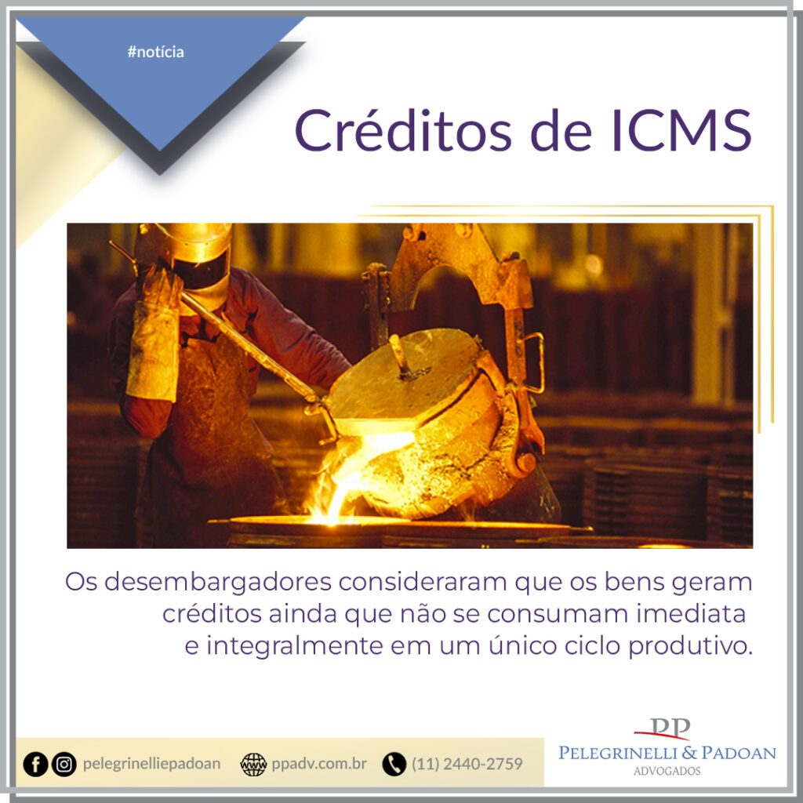

TJSP: Insumos consumidos indiretamente no ciclo produtivo geram créditos de ICMS

TJSP: Insumos consumidos indiretamente no ciclo produtivo geram créditos de ICMS
Para a Corte, geram créditos bens incorporados ao produto final, ainda que não haja consumo imediato e integral
A 1ª Câmara de Direito Público do Tribunal de Justiça do Estado de São Paulo (TJSP) deu vitória a uma metalúrgica ao reconhecer, no mês passado, a possibilidade de creditamento de ICMS sobre a compra de eletrodos de grafite. Os desembargadores consideraram que os bens geram créditos ainda que não se consumam imediata e integralmente em um único ciclo produtivo.
O eletrodo é um condutor que permite a transferência de elétrons utilizado, por exemplo, em pilhas e baterias. No caso, a empresa usava o produto para gerar uma corrente elétrica e esquentar os fornos para a fundição de metais, processo que consumia o material e exigia que a companhia fosse periodicamente ao mercado para o substituir.
A metalúrgica enxergava o eletrodo como insumo para a fundição, de modo que tomava créditos de ICMS sobre a sua aquisição. Foi, contudo, autuada pela Secretaria de Fazenda e Planejamento do Estado de São Paulo (Sefaz-SP), que alegou haver irregularidades no pagamento do imposto.
O fisco argumentou que o produto era uma parte do forno, um componente que se deteriorava com o tempo, sendo o desgaste inerente ao uso, e que a companhia não poderia ter se aproveitado do benefício fiscal.
De acordo com Fernanda Rizzo Paes de Almeida, do escritório Vieira Rezende, há um entendimento antigo, “equivocadamente aplicado”, de que “somente são insumos aqueles produtos que são imediata e completamente integrados ao produto final do processo produtivo”.
“Mas a legislação nunca disse isso. De 30 anos, quando ela foi renovada, para cá, a legislação não exige o consumo imediato e integral. E isso vinha sendo replicado como se fosse uma máxima,” afirmou a advogada, que atuou no caso.
Foi precisamente assim, no entanto, como julgou Anderson Fabrício da Cruz, juiz da 1ª Vara Cível de Mauá, que apreciou o caso na primeira instância. Segundo ele, para os eletrodos serem passíveis de creditamento, deveriam “ser completamente consumidos no processo industrial, integrando-se total e imediatamente ao produto final”, o que a prova técnica não apontou.
A perícia constatou que os eletrodos se desgastavam no processo produtivo e que partes que se desprendiam eram agregadas à massa do metal fundido. Os condutores eram trocados com recorrência, embora durassem mais de um ciclo produtivo.
Trechos idênticos do laudo pericial foram mencionados na sentença e na decisão de segundo grau. Mas, para o relator do recurso na 1ª Câmara de Direito Público do TJSP, desembargador Danilo Panizza, a prova confirmou a possibilidade de apuração de créditos de ICMS.
O magistrado citou precedentes da corte, um dos quais diz que é possível a compensação dos créditos de ICMS, “ainda que não haja o consumo imediato e integral do material adquirido”, bastando analisar se o bem é utilizado na fabricação do produto final.
A decisão, afirmou a advogada, “reforça o entendimento dos contribuintes de que não é necessário que o bem seja consumido imediata e integralmente no ciclo produtivo. Isso abre bastante o leque de produtos adquiridos pelas empresas e que gerarão direito ao crédito”.
O desembargador trouxe ainda precedente da própria metalúrgica. Na decisão, fica expresso que “os eletrodos de grafite adquiridos pela autora são empregados e se consomem no processo de industrialização, considerados, portanto, como insumos ou auxiliares de produção, bem como materiais que participam do processo produtivo, direta e indiretamente necessários para fabricação do produto final”.
“Conseguimos em dois processos diferentes o reconhecimento de que esses materiais são passíveis de tomada de créditos de ICMS, formando o TJSP jurisprudência em relação aos eletrodos, que pode ser utilizada por toda a indústria de metalúrgica, fundições, estaleiros, indústrias químicas, construção civil, empresas de manutenção e serralherias,” ressaltou Fernanda Rizzo.
O processo tramita sob o número 1006261-02.2014.8.26.0348.